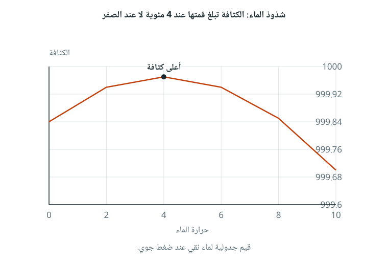

لماذا قد تتشقق الأنابيب عند تجمّد الماء؟
Why water expands as it cools and pipes burst
يزداد حجم الماء عند تجمّده. وإذا حاصر الجليد ماءً سائلًا داخل جزء مغلق من الأنبوب، فقد يرتفع الضغط بما يكفي لتشقق الأنبوب.
كل سائل يتقلّص بالتبريد، إلا الماء في نطاق قريب من التجمد. من 4 مئوية إلى الصفر تتمدّد الكثافة وتنقص: 999.97 عند 4 درجات، 999.84 عند الصفر، ثم 917 للجليد. الانخفاض من 999.84 إلى 917 يعني زيادة في الحجم بنسبة 9.05٪ عند التحوّل إلى جليد. في أنبوب مغلق لا يوجد مكان لهذه الزيادة، فترتفع الحرارة والضغط حتى يتشقق المعدن. المشكلة ليست «البرودة تُكسر الحديد» بل أن الماء يرفض الانضغاط ويطلب حجماً أكبر.
كيف تعمل الظاهرة؟
السبب بنية جزيء الماء: روابط هيدروجينية تفرض في الجليد شبكة سداسية مفتوحة، فتحتل الجزيئات حجماً أكبر من السائل. عند التسخين من الصفر إلى 4 درجات تتفكك بعض هذه الشبكة فينكمش السائل، وبعد 4 درجات يبدأ التمدد الحراري المعتاد فيغلب.
العلاقة بالأرقام
الكثافة: 999.84 كجم/م³ عند 0 مئوية، 999.97 عند 4، 999.70 عند 10، و917 للجليد. الحجم النوعي للجليد أكبر بـ 1000/917 = 1.0905، أي 9.05٪. والتبريد من 4 إلى 0 وحده يزيد الحجم بـ 0.013٪ فقط — الزيادة الكبرى تأتي من التحوّل الطوري لا من التبريد.
مفاهيم متقاربة
يُقال «الماء يتمدد عند التجمد» فيُفهم أن التبريد نفسه يمدّد. الأدق: التبريد من 4 إلى 0 يزيد الحجم زيادة طفيفة، والقفزة الحقيقية لحظة التبلور. ولهذا يبقى الأنبوب سليماً حتى يتجمد الماء فعلاً، ثم ينفجر في ليلة واحدة.
حدود التطبيق
الضغط الناتج في أنبوب مغلق صلب يعتمد على نسبة الامتلاء ومرونة الجدار ووجود فراغ هوائي. الأنبوب الذي فيه فراغ يتحمّل أكثر، والأنبوب المرن (بلاستيك) يتمدد بدل أن ينفجر. والقيم كثافات لماء نقي عند ضغط جوي.

| الكمية | القيمة | المصدر |
|---|---|---|
| أعلى كثافة للماء (عند 4 مئوية) | 999.97 kg/m³ | [1] |
| كثافة الجليد | 917 kg/m³ | [2] |
| زيادة الحجم عند التحول إلى جليد | 9.05 % | [1] |
المصادر
- 1 OpenStax, College Physics 2e — Temperature — OpenStax. openstax.org/books/college-physics-2e/pages/13-1-temperature · اطُّلع عليه 2026-11-16
- 2 OpenStax, College Physics 2e — Phase Change and Latent Heat — OpenStax. openstax.org/books/college-physics-2e/pages/14-3-phase-change-and-latent-heat · اطُّلع عليه 2026-11-16
راجعه: مراجعة آلية — ديوان المعرفة (أرقام محسوبة + مصادر متحققة) 2026-11-16 · 2026-11-16 · آخر تحديث 2026-11-17
رجوع إلى المقالات